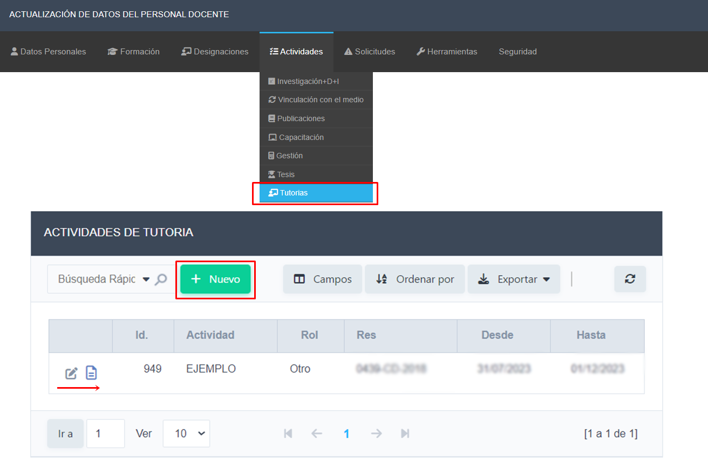

Ingrese al Ítem de Menú Actividades Tutorias
Se visualiza la siguiente interfaz, en la que podrá ver las tutorías que tiene registradas.
Para visualizar o editar las actividades de Tutorías debe hacer clic en el icono de editar, de la actividad en cuestión. También tiene la opción de agregar una nueva tutoría
Si se hace clic en el botón de editar de la actividad en cuestión se visualiza
Actualice la información necesaria. En el campo Resolución tenga presente respetar la nomenclatura en caso de tratarse de una resolución de la Universidad. En el icono de ayuda puede corroborar lo mencionado.
Finalmente, en caso de realizar modificaciones hacer clic en el Botón Guardar, si solo quería revisar la información, puede usar el Botón Regresar, para volver a la interfaz anterior, o bien si lo que quiere es agregar una nueva gestión puede hacer clic en el Botón Nuevo